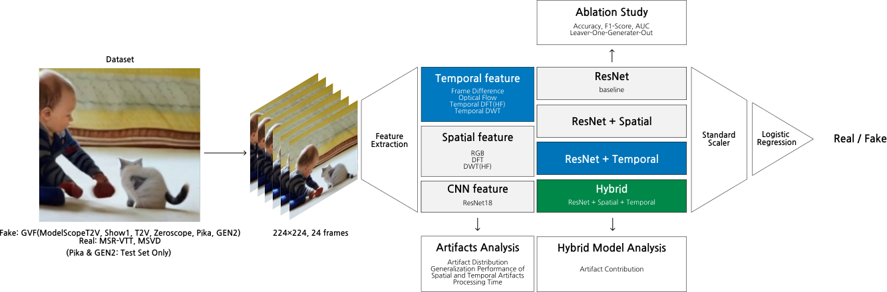

Try our hybrid model that combines temporal low-level artifacts with CNN features to detect AI-generated video — upload your own video to see it in action.
Because AI-generated video is fundamentally spatiotemporal data, this study designs a hybrid detection model centered on temporal low-level artifacts, combined with spatial and deep-learning (CNN) features. Using temporal artifacts that are cheap to compute, the model's AUC improved significantly from 0.9440 to 0.9597. Ablation studies and leave-one-generator-out experiments confirm both the interpretability and the generalization performance of the model.
The pipeline runs from data collection through feature definition and quantitative analysis (Stage 1), to training and validating the proposed hybrid model (Stage 2) — the full workflow is laid out below.

Most prior detectors rely only on spatial, appearance-based artifacts or opaque deep features, leaving temporal information underused and offering little interpretability. This study asks how AI-generated video can be identified primarily through its temporal characteristics, in a way that is both interpretable and generalizable — by defining and quantifying temporal low-level artifacts with signal-processing statistics and combining them with spatial and CNN features in a white-box, coefficient-interpretable model.
The temporal artifacts are grounded in three tools: the Discrete Fourier Transform (global frequency decomposition), the Discrete Wavelet Transform (localized time-frequency decomposition into low- and high-frequency components), and optical flow (per-pixel motion estimation between consecutive frames). A frozen, ImageNet-pretrained ResNet18 supplies complementary deep CNN features.
Across almost every artifact axis, real and fake videos show statistically distinct distributions (Real > Fake). AUC rises from 0.9455 (ResNet alone) to 0.9515 (+Spatial) and 0.9516 (+Temporal), and to 0.9603 for the full Hybrid model — a gain larger than the sum of the individual improvements, confirming a complementary effect. In the Hybrid model's decision, ResNet still dominates (about 77%), with spatial (~19%) and temporal (~3-4%) artifacts contributing at a much lower computational cost.
The results give a definition and quantitative characterization of temporal low-level artifacts and demonstrate a white-box, coefficient-interpretable detection approach. Because temporal features are cheap to compute, this points toward lightweight, real-time on-device detectors, generalization checks against newer generative models, and applications such as SNS deepfake filtering and autonomous-driving video verification — the motivation for this web-based interface.